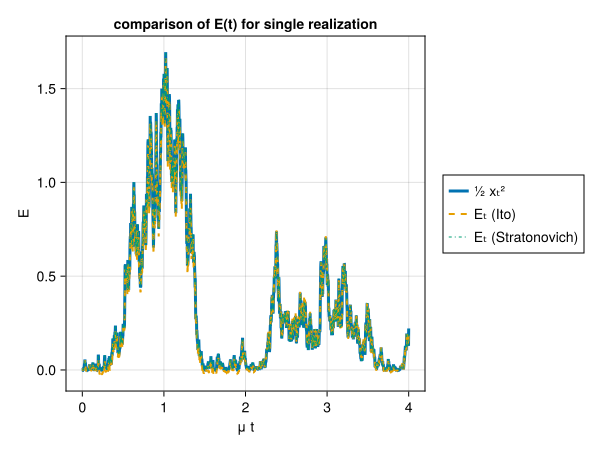
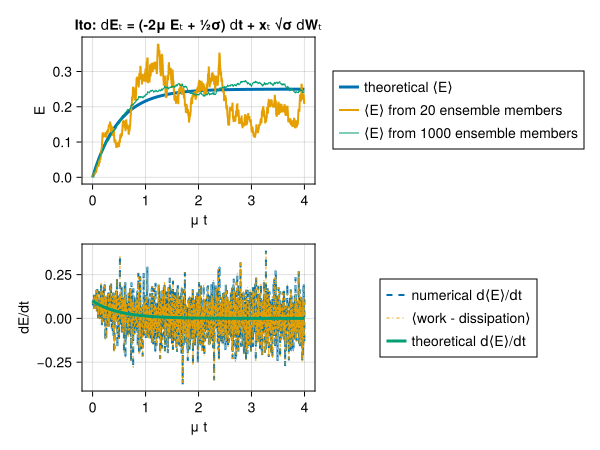
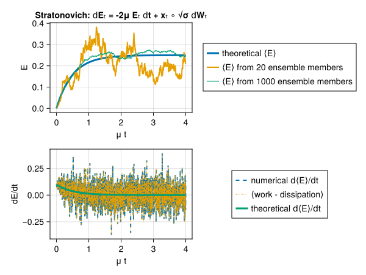

Stochastic Forcing
Forcing terms are implemented in various modules. Forcing can be either deterministic or stochastic (random). For deterministic forcing the implementation is straightforward; for stochastic forcing there are two main train of thoughts: Itô calculus and Stratonovich calculus.
Both stochastic calculi give the same results. But once we decide to use one of the two calculi we have to remain consistent and use that calculus throughout. There can be a lot of confusion and oftentimes confusion stems from mixing the two different stochastic calculi in a single computation instead of using one of the two consistently all along.
All modules included in GeophysicalFlows.jl use Stratonovich calculus.
The choice of Stratonovich calculus for GeophysicalFlows.jl was made since this calculus "works the same" with both stochastic and deterministic forcing, i.e., with Stratonovich calculus we have the same chain rules for differentiation for stochastic functions as the chain rules we learn in normal-deterministic calculus). Therefore, with the Stratonovich calculus the code does not really "care" whether the user implement deterministic or stochastic forcing.
If you are interested in learning more regarding the two stochastic calculi and how they are numerically implemented then read on; otherwise you can skip this section of the documentation.
Stochastic Differential Equations (SDEs)
A differential equation:
\[ \frac{\mathrm{d} x}{\mathrm{d} t} = f(x) , \quad x(t_0) = 0,\]
can also be equivalently written in an integral form:
\[ x(t) = \int_{t_0}^t f(x(s)) \, \mathrm{d} s.\]
In a similar manner, a stochastic differential equation (SDE),
\[ \mathrm{d} x = f(x) \, \mathrm{d} t + g(x) \, \mathrm{d} W_t , \quad x(t_0) = 0 ,\]
with $W_t$ a Brownian motion or Wiener process, can be written in an integral form as:
\[ x(t) = \int_{t_0}^{t} f(x(s)) \, \mathrm{d} s + \int_{t_0}^{t} g(x(s)) \, \mathrm{d} W_s .\]
A Wiener process is a random variable $W_t$ that depends continuously on $t \ge 0$ and satisfies the following properties:
- Independence. For $0 \le s \le t$ the increment $W_t - W_s$ is independent of any prior values, i.e., independent of all $W_\tau$, $\tau \le s$.
- Stationarity. The statistical distribution of the increment $W_{t+s} − W_s$ does not depend on $s$ (and so is identical in distribution to $W_t$).
- Gaussianity. $W_t$ is a Gaussian process with mean $\langle W_t \rangle = 0$ and covariance $\langle W_t W_s \rangle = \min(t, s)$.
It's common to use notation $x_t$ to denote explicit $t$-dependence of variable $x$. Not to be confused with the other common usage of subscripts for denoting partial differentiation.
The last integral in the integral representation of a SDE expression above is a stochastic integral (it involves a stochastic differential, $\mathrm{d} W_t$). There is not a single straight-forward way for computing the value of a stochastic integral. The various ways we can approximate the value of a stochastic integral as a Riemannian sum each lead to a different answer. The two most popular ways for computing such stochastic integrals are:
\[\begin{aligned} {\color{Green} \text{Itô}} &: {\color{Green}\int_{t_0}^{t} g(x(s)) \, \mathrm{d} W_s \approx \sum_{j} g \left ( x(t_j) \right )(W_{j+1} - W_j)} , \\ {\color{Magenta} \text{Stratonovich}} &: {\color{Magenta} \int_{t_0}^{t} g(x(s)) \, \mathrm{d} W_s \approx \sum_{j} g \left (x \left (\tfrac{1}{2}(t_j + t_{j+1}) \right ) \right)(W_{j+1} - W_j)} . \end{aligned}\]
The difference in the two calculi above lies in the point at which we choose to evaluate $g(x)$: we take the start of the time-interval for ${\color{Green} \text{Itô, } t_j}$, while we use the mid-point for ${\color{Magenta}\text{Stratonovich, } \tfrac{1}{2}(t_j+t_{j+1})}$. In the case the stochastic noise is additive, i.e., its prefactor $g$ does not depend on the state $x_t$, then the two interpretations coincide. When the noise does depend on the state of the system, i.e., $g=g(x(t))$, then the two interpretations above give thoroughly different results. This happens because the white noise process is not continuous and, therefore, the two interpretations of the stochastic integrals above do not converge to the same result.
To overcome this apparent inconsistency, the two choices above come together with different chain rules, i.e., chain rules that are not necessarily the same as those in plain old calculus. Let us see how different choices for computing the stochastic integrals bring about the need for different chain rules.
An SDE can be written also in differential form. Because we cannot formally form the derivative $\mathrm{d} W / \mathrm{d} t$, since $W$ is nowhere differentiable, we write an SDE in differential form as:
\[\begin{aligned} {\color{Green}\text{Itô}} &: {\color{Green}\mathrm{d} x_t = f(x_t) \mathrm{d} t + g(x_t) \mathrm{d} W_t} , \\ {\color{Magenta}\text{Stratonovich}} &: {\color{Magenta}\mathrm{d} x_t = f(x_t) \mathrm{d} t + g(x_t) \circ \mathrm{d} W_t} . \end{aligned}\]
The circle in the term ${\color{Magenta}g(x_t) \circ \mathrm{d} W_t}$ is used to differentiate between Itô and Stratonovich calculus.
Let's now assume we perform a variable change $y = G(x)$. It turns out that according to which interpretation of the stochastic integral one chooses to use, then the following chain rule must be used:
\[\begin{aligned} {\color{Green}\text{Itô}} &: {\color{Green}\mathrm{d} y_t = \frac{\mathrm{d} G}{\mathrm{d} x} \mathrm{d} x_t + \frac{1}{2} g(x_t)^2 \frac{\mathrm{d}^2 G}{\mathrm{d} x^2} \mathrm{d} t = \left[ \frac{\mathrm{d} G}{\mathrm{d} x} f(x_t) + \frac{1}{2} g(x_t)^2 \frac{\mathrm{d}^2 G}{\mathrm{d} x^2} \right] \mathrm{d} t + \frac{\mathrm{d} G}{\mathrm{d} x} g(x_t) \mathrm{d} W_t} , \\ {\color{Magenta}\text{Stratonovich}} &: {\color{Magenta}\mathrm{d} y_t = \frac{\mathrm{d} G}{\mathrm{d} x} \mathrm{d} x_t = \frac{\mathrm{d} G}{\mathrm{d} x} f(x_t) \mathrm{d} t + \frac{\mathrm{d} G}{\mathrm{d} x} g(x_t) \circ \mathrm{d} W_t} . \end{aligned}\]
The above are the so-called stochastic chain rules. All derivatives of $G$ are evaluated at $x_t$. For Stratonovich calculus, the chain rule resembles the usual chain rule one learns in calculus; for Itô there exists an additional term, often referred to as the "drift-term": ${\color{Green}\tfrac{1}{2} g^2 \, \mathrm{d}^2G / \mathrm{d} x^2}$.
It's easy to see that the extra drift-term in Itô's interpretation of the stochastic integral, is exactly equal to the ensemble mean over forcing realizations of the Stratonovich stochastic integral. That's because the Itô stochastic integral has, by construction, zero ensemble mean since at every instant the noise is multiplied with $g$ which is evaluated at a time instance before the action of the noise; $g$ and $\mathrm{d} W$ are uncorrelated and thus:
\[{\color{Green} \left \langle g(x_t) \mathrm{d} W_t \right \rangle = 0} \quad \text{while} \quad {\color{Magenta} \left \langle g(x_t) \circ \mathrm{d} W_t \right \rangle \ne 0} .\]
The above is demonstrated by evaluating the simple stochastic integral:
\[\begin{aligned} {\color{Green} \text{Itô}} &: {\color{Green} \left \langle \int_{t_0}^{t} W_s \, \mathrm{d} W_s \right \rangle \approx \sum_{j} \left \langle W_j (W_{j+1} - W_j) \right \rangle} \\ & \hspace{7.3em} {\color{Green} = \sum_j \left \langle W_j W_{j+1} \right \rangle - \left \langle W_j W_j \right \rangle \sim \sum_{j} t_j - t_j = 0} , \\ {\color{Magenta}\text{Stratonovich}} &: {\color{Magenta}\left \langle \int_{t_0}^{t} W_s \circ \mathrm{d} W_s \right \rangle \approx \sum_j \left \langle \frac1{2}(W_j + W_{j+1}) (W_{j+1} - W_j)\right \rangle} \\ & \hspace{7.3em} {\color{Magenta} = \frac1{2} \sum_j \left \langle W_{j+1} W_{j+1} \right \rangle - \left \langle W_j W_j \right \rangle \sim \frac1{2} \sum_j t_{j+1} - t_j = \frac{t}{2}} . \end{aligned}\]
SDEs rarely can be solved in closed form; most often numerical solution of SDEs is brought to the rescue. Itô calculus has the advantage that is very easily implemented numerically. On the other hand, the chain rule in Stratonovich calculus coincides with that in normal calculus. This stems from the fact that in the Stratonovich interpretation the white noise process is as a series of colored noise processes with the de-correlation time tending to zero. This made Stratonovich calculus more popular in the physics community. A nice discussion on the differences and similarities between the two calculi is given by Van Kampen (1981).
A simple Stochastic Differential Equation: the Ornstein–Uhlenbeck process
One of the simplest SDEs is the Ornstein–Uhlenbeck process, a variation of which is:
\[x(t) = - \int_{t_0}^{t} \mu x(s) \, \mathrm{d} s + \int_{t_0}^{t} \sqrt{\sigma} \, \mathrm{d} W_s . \tag{1}\]
Note that in differential form (1) is written as:
\[\mathrm{d} x_t = - \mu x_t \, \mathrm{d} t + \sqrt{\sigma} \, \mathrm{d} W_t . \tag{2}\]
Luckily, for (2) we don't need to distinguish between Itô and Stratonovich, since $g$ is independent of $x(t)$. But note that often this is not the case; that $g$ is independent of $x(t)$ is only a fortuitous coincident for this particular SDE.
How do we time-step SDE (2) numerically? Let us assume a discretization of time into time-steps of duration $\tau$, i.e., $t_j = (j-1) \tau$, $j=1, 2, \dots$. (What follows is easily generalized to non-uniform time discretizations.) With that in mind, we denote $x_j \equiv x(t_j)$. Then the Euler–Mayorama time-stepping scheme for (2) is
\[ x_{j+1} = x_j + (-\mu x_j) \tau + \sqrt{\sigma} (W_{j+1} - W_j) .\]
Now let us ask the following question: How can we compute the work done by the noise? In other words, if we are interested in the evolution of the "energy", defined as $E \equiv \tfrac{1}{2} x^2$, then how does the noise term attribute in the growth of $E$? To answer that we first have to find the SDE that energy $E$ obeys. But, in doing so, it is important to adopt a single interpretation for computing stochastic integrals as now a transformation of variables is needed. That is, depending on whether we choose to interpret the stochastic integrals according to Itô or to Stratonovich calculus, $E$ evolves according to:
\[\hspace{3.35em} {\color{Green} \text{Itô}} : {\color{Green} \mathrm{d} E_t = \left ( -2 \mu E_t + \tfrac{1}{2} \sigma \right ) \mathrm{d} t + x_t \sqrt{\sigma} \mathrm{d} W_t} , \tag{3}\]
\[\hspace{-3.35em} {\color{Magenta} \text{Stratonovich}} : {\color{Magenta} \mathrm{d} E_t = -2 \mu E_t \mathrm{d} t + x_t \circ \sqrt{\sigma} \mathrm{d} W_t} . \tag{4}\]
The term $-2 \mu E_t$ in both cases is the dissipation of energy by the $\mu$ term; the rest of the terms involve the noise. How do we compute the work $P$ done by the noise? Well, it follows that:
\[\begin{aligned} {\color{Green} \text{Itô}} &: {\color{Green} P_t = \tfrac{1}{2} \sigma \mathrm{d} t + \sqrt{\sigma} x_t \mathrm{d} W_t \approx \tfrac{1}{2} \sigma \, \mathrm{d}t + \sqrt{\sigma} x_j (W_{j+1} - W_j)} , \\ {\color{Magenta} \text{Stratonovich}} &: {\color{Magenta} P_t = x_t \circ \sqrt{\sigma} \mathrm{d} W_t \approx \sqrt{\sigma} x \left ( \tfrac{1}{2} (t_j + t_{j+1}) \right ) (W_{j+1} - W_j)} . \end{aligned}\]
Now let's assume for a moment that we didn't know the rules for transforming Stratonovich to Itô and we were wondering what is the extra drift term we have to include in the Itô formulations, i.e., the $\tfrac{1}{2} \sigma$ term. We can compute the Itô's drift-term using the fact that it is exactly equal to $\langle x_t \circ \sqrt{\sigma} \mathrm{d} W_t \rangle$; and for the latter we can use the "usual" calculus. That is, we rewrite (1) as:
\[\dot{x} = -\mu x + \xi , \tag{5}\]
where $\xi(t)$ is understood to be the "continuous" version of the white-noise process (which is formally only understood in terms of distributions). The forcing $\xi$ has the properties:
\[\left \langle \xi(t) \right \rangle = 0 \quad \text{and} \quad \left \langle \xi(t) \xi(t') \right \rangle = \sigma \delta(t - t') .\]
Thus we need to compute $\langle P_t \rangle = \langle x(t) \xi(t) \rangle$. But (5) formally has the solution:
\[x(t) = e^{-\mu t} x(0) + \int_0^t e^{-\mu (t - s)} \xi(s) \, \mathrm{d} s .\]
and using this solution we get
\[\langle P_t \rangle = \langle x(t) \xi(t) \rangle = e^{-\mu t} \underbrace{\langle x(0) \xi(t) \rangle}_{=0} + \int_0^t e^{-\mu (t - s)} \langle \xi(t) \xi(s) \rangle \, \mathrm{d} s = \sigma \int_0^t e^{- \mu (t - s)} \delta(t - s) \, \mathrm{d} s = \frac{\sigma}{2} .\]
Above we used that $\int_0^t \delta(t - s) \mathrm{d} s = \tfrac{1}{2}$, which is consistent with the Stratonovich symmetric interpretation of stochastic integrals.
Numerical implementation
How do we time-step the equation for $E$? In the case of Itô's interpretation, (3), we use the Euler–Maruyama time-stepping scheme:
\[ E_{j+1} = E_j + \left ( -2 \mu E_j + \frac{\sigma}{2} \right ) \tau + \sqrt{\sigma} x_j (W_{j+1} - W_j).\]
However, we cannot use Euler–Maruyama for time-stepping the corresponding Stratonovich version of (4), since the Euler–Maruyama scheme involves "Itô"-thinking. To time-step (4) we have to approximate $g$ in the middle of the time-step. There are many ways to do that, one of which is the, so called, Euler–Heun method:
\[\begin{aligned} \widetilde{E}_{j+1} &= E_j + (- 2\mu E_j) \tau + \sqrt{\sigma} x_j (W_{j+1} - W_j), \\ E_{j+1} &= E_j + \left( -2 \mu \frac{E_j + \widetilde{E}_{j + 1}}{2} \right)\tau + \sqrt{\sigma}\frac{x_j + x_{j+1}}{2} (W_{j+1} - W_j) . \end{aligned}\]
Let's apply not Euler–Maruyama and Euler–Heun schemes to time-step (3) and (4) respectively and compare the results with those obtained from time-stepping (2) and computing $E$ a posteriori.
Figure below compares the energy evolution as predicted by:
- direct computation from the $x_t$ time-series: $\tfrac{1}{2} x_t^2$,
- time-integration of (3) using Euler–Maruyama, and
- time-integration of (4) using Euler–Heun.
using CairoMakie
using Statistics: mean
using Random: randn, seed!
seed!(1234) # for reproducing the same plots
μ = 0.2
σ = 0.2 # noise strength
dt = 0.01 # timestep
nsteps = 2001 # total timesteps
n_realizations = 1000 # how many forcing realizations
some_realizations = 20 # used for plotting to illustrate convergence
t = 0:dt:(nsteps-1)*dt # time
ΔW = randn(nsteps, n_realizations) * sqrt(dt) # noise
# Numerical calculation
x = zeros(size(ΔW))
E_ito = zeros(size(ΔW))
E_str = zeros(size(ΔW))
E_numerical = zeros(size(ΔW))
for j = 2:nsteps # time step the equations
# time-step dx = - μ x dt + √σ dW
@. x[j, :] = x[j-1, :] - μ * x[j-1, :] * dt + sqrt(σ) * ΔW[j-1, :]
# time-step dE = (- 2μ E + ½σ) dt + √σ x dW
@. E_ito[j, :] = E_ito[j-1, :] + (-2μ * E_ito[j-1, :]
+ σ/2) * dt + sqrt(σ) * x[j-1, :] * ΔW[j-1, :]
# time-step dE = - 2μ E dt + √σ x ∘ dW
xbar = @. x[j-1, :] - μ * x[j-1, :] * dt + sqrt(σ) * ΔW[j-1, :]
Ebar = @. E_str[j-1, :] + (-2μ * E_str[j-1, :]) * dt + sqrt(σ) * x[j-1, :] * ΔW[j-1, :]
@. E_str[j, :] = E_str[j-1, :] + (-2μ * (E_str[j-1, :]
+ Ebar) / 2) * dt + sqrt(σ) * (x[j-1, :] + xbar) / 2 * ΔW[j-1, :]
end
# direct computation of E from x
@. E_numerical = 0.5 * x^2
# compare the three E(t) solutions
fig = Figure()
ax = Axis(fig[1, 1];
xlabel = "μ t",
ylabel = "E",
title = "comparison of E(t) for single realization")
hl1 = lines!(ax, μ * t, E_numerical[:, 1];
linewidth = 3, linestyle = :solid)
hl2 = lines!(ax, μ * t, E_ito[:, 1];
linewidth = 2, linestyle = :dash)
hl3 = lines!(ax, μ * t, E_str[:, 1];
linewidth = 1, linestyle = :dashdot)
Legend(fig[1, 2], [hl1, hl2, hl3], ["½ xₜ²", "Eₜ (Ito)", "Eₜ (Stratonovich)"])
Now we can further compute the "energy" budgets, i.e., the work done by the noise versus the energy loss by the $μ$ term, using Itô and Stratonovich formalisms. Figures below show the ensemble mean energy budgets (using 1000 ensemble members) as computed using Itô and Stratonovich calculus. For the energy budget to close we have to be consistent: if we time-step the energy equation based on Stratonovich calculus then we must compute the work also according to Stratonovich and vice versa.
# theoretical results for ⟨E⟩ and d⟨E⟩/dt
E_theory = @. σ/4μ * (1 - exp(-2μ * t))
dEdt_theory = @. σ/2 * exp(-2μ * t)
# compute d⟨E⟩/dt numerically
dEdt_ito = mean(E_ito[2:nsteps, :] .- E_ito[1:nsteps-1, :], dims=2) / dt
# compute the work and dissipation
work_ito = mean(sqrt(σ) * ΔW[1:nsteps-1, :] / dt .* x[1:nsteps-1, :] .+ σ/2, dims=2)
diss_ito = 2μ * (mean(E_ito[1:nsteps-1, :], dims=2))
# Ensemble mean energy budgets from the Itô integration
fig = Figure()
ax1 = Axis(fig[1, 1];
xlabel = "μ t",
ylabel = "E",
title = "Ito: 𝖽Eₜ = (-2μ Eₜ + ½σ) 𝖽t + xₜ √σ 𝖽Wₜ")
hl1 = lines!(ax1, μ * t, E_theory;
linewidth = 3)
hl2 = lines!(ax1, μ * t, vec(mean(E_ito[:, 1:some_realizations], dims=2));
linewidth = 2)
hl3 = lines!(ax1, μ * t, vec(mean(E_ito, dims=2)),
linewidth = 1)
Legend(fig[1, 2], [hl1, hl2, hl3],
["theoretical ⟨E⟩", "⟨E⟩ from $some_realizations ensemble members", "⟨E⟩ from $n_realizations ensemble members"])
ax2 = Axis(fig[2, 1];
xlabel = "μ t",
ylabel = "dE/dt")
hl1 = lines!(ax2, μ * t[1:nsteps-1], vec(dEdt_ito);
linewidth = 2, linestyle = :dash)
hl2 = lines!(ax2, μ * t[1:nsteps-1], vec(work_ito .- diss_ito);
linewidth = 1, linestyle = :dashdot)
hl3 = lines!(ax2, μ * t[1:nsteps-1], dEdt_theory[1:nsteps-1];
linewidth = 3, linestyle = :solid)
Legend(fig[2, 2], [hl1, hl2, hl3],
["numerical 𝖽⟨E⟩/𝖽t", "⟨work - dissipation⟩", "theoretical 𝖽⟨E⟩/𝖽t"])
# compute d⟨E⟩/dt numerically
dEdt_str = mean(E_str[2:nsteps, :] .- E_str[1:nsteps-1, :], dims=2) / dt
# compute the work and dissipation
work_str = mean(sqrt(σ) * ΔW[1:nsteps-1, :] / dt .* (x[1:nsteps-1, :] .+ x[2:nsteps, :])/2, dims=2)
diss_str = 2μ * (mean(E_str[1:nsteps-1, :], dims=2))
fig = Figure()
ax1 = Axis(fig[1, 1];
xlabel = "μ t",
ylabel = "E",
title = "Stratonovich: 𝖽Eₜ = -2μ Eₜ 𝖽t + xₜ ∘ √σ 𝖽Wₜ")
hl1 = lines!(ax1, μ * t, E_theory;
linewidth = 3)
hl2 = lines!(ax1, μ * t, vec(mean(E_str[:, 1:some_realizations], dims=2));
linewidth = 2)
hl3 = lines!(ax1, μ * t, vec(mean(E_str, dims=2)),
linewidth = 1)
Legend(fig[1, 2], [hl1, hl2, hl3],
["theoretical ⟨E⟩", "⟨E⟩ from $some_realizations ensemble members", "⟨E⟩ from $n_realizations ensemble members"])
ax2 = Axis(fig[2, 1];
xlabel = "μ t",
ylabel = "dE/dt")
hl1 = lines!(ax2, μ * t[1:nsteps-1], vec(dEdt_str);
linewidth = 2, linestyle = :dash)
hl2 = lines!(ax2, μ * t[1:nsteps-1], vec(work_str .- diss_str);
linewidth = 1, linestyle = :dashdot)
hl3 = lines!(ax2, μ * t[1:nsteps-1], dEdt_theory[1:nsteps-1];
linewidth = 3, linestyle = :solid)
Legend(fig[2, 2], [hl1, hl2, hl3],
["numerical 𝖽⟨E⟩/𝖽t", "⟨work - dissipation⟩", "theoretical 𝖽⟨E⟩/𝖽t"])
A simple Stochastic Partial Differential Equation (SPDE)
We would like now to transfer all the knowledge we got from the previous sections to PDEs. In particular we'll start by focussing on the simple SPDE:
\[\partial_t \nabla^2 \psi(\bm{x}, t) = - \mu \nabla^2 \psi(\bm{x}, t) + \xi(\bm{x}, t) , \tag{6}\]
with periodic boundary conditions in both $x$ and $y$. SPDE (6) is also equivalently written as:
\[\mathrm{d} \nabla^2 \psi_{t}(\bm{x}) = - \mu \nabla^2 \psi_{t} (\bm{x}) \mathrm{d} t + \sqrt{\sigma} \mathrm{d} W_{t} (\bm{x}) .\]
The form (6) is the continuous version, similar to (2). In this SPDE, since the forcing is purely additive, i.e., it does not depend on the state of the system, both Itô and Stratonovich interpretations coincide.
The forcing $\xi$ obeys:
\[\langle \xi(\bm{x}, t) \rangle = 0 \quad \text{and} \quad \langle \xi(\bm{x}, t) \xi(\bm{x}', t') \rangle = Q(\bm{x} - \bm{x}') \delta(t - t') ,\]
that is, the forcing is white in time but spatially correlated; its spatial correlation is prescribed by the function $Q$ which is, necessarily, homogeneous in all its arguments (see discussion by Constantinou (2015); Appendix A).
Equation (6) above describes the vorticity evolution of a two-dimensional fluid $\nabla^2 \psi$ that is stochastically forced while dissipated by linear drag $\mu$. The energy of the fluid is:
\[E = \tfrac{1}{2} \overline{|\bm{\nabla} \psi|^2}^{x, y} = -\tfrac{1}{2} \overline{\psi \nabla^2 \psi}^{x, y} ,\]
where the overbar denotes average over $x$ and $y$ and an integration-by-parts was carried through in the last equality. To obtain the energy equation we multiply (6) with $-\psi$ and average over the whole domain. Thus, the work done by the forcing is given by:
\[P = - \, \overline{\psi \, \xi}^{x, y} ,\]
but the above is a stochastic integral and it is meaningless without a rule for computing the stochastic integral.
Numerically, the work done by the forcing at the $j$-th timestep can be obtained Stratonovich-wise via:
\[\begin{aligned} P_j = - \, \overline{\frac{\psi(\bm{x}, t_j) + \psi(\bm{x}, t_{j+1})}{2} \xi(\bm{x}, t_{j+1}) }^{x,y} , \end{aligned}\]
or Itô-wise as
\[\begin{aligned} P_j = -\, \overline{ \psi(\bm{x}, t_j) \xi(\bm{x}, t_{j+1}) }^{x,y} + \text{drift} . \end{aligned}\]
But how much is the Itô drift term in this case? As in the previous section, the drift is precisely the ensemble mean of the Stratonovich work, i.e.:
\[\textrm{Ito drift}= - \overline{\langle \underbrace{\psi(\bm{x}, t) \circ \xi(\bm{x}, t)}_{\textrm{Stratonovich}} \rangle}^{x, y} .\]
But again, the above can be computed using the "formal" solution of (6):
\[\psi(\bm{x}, t) = e^{-\mu t} \psi(\bm{x}, 0) + \int_0^t e^{- \mu (t - s)} \nabla^{-2} \xi(\bm{x}, s) \, \mathrm{d} s ,\]
which implies
\[\begin{aligned} \text{drift} & = -\overline{e^{- \mu t} \underbrace{\left \langle \psi(\bm{x}, 0) \xi(\bm{x}, t) \right \rangle}_{=0}}^{x, y} - \int_0^t e^{- \mu (t - s)} \overline{\nabla^{-2} \left \langle \xi(\bm{x}, s) \xi(\bm{x}, t) \right\rangle}^{x, y} \, \mathrm{d} s \\ & = - \int_0^t e^{-\mu(t - s)} \overline{\underbrace{\left [ \nabla^{-2} Q (\bm{x}) \right ] \big|_{\bm{x}=0}}_{\text{independent of }x, y} \, \delta(t - s)}^{x,y} \, \mathrm{d} s \\ & = - \frac1{2} \nabla^{-2} Q(\bm{x}) \big|_{\bm{x}=0} \\ & = - \frac1{2} \left [ \nabla^{-2} \int \frac{\mathrm{d}^2 \bm{k}}{(2\pi)^2} \widehat{Q}(\bm{k}) \, e^{i \bm{k} \bm{\cdot} \bm{x}} \right ]_{\bm{x}=0} \\ & = \int \frac{\mathrm{d}^2 \bm{k}}{(2\pi)^2} \frac{\widehat{Q}(\bm{k})}{2 |\bm{k}|^2} . \end{aligned}\]
Thus, the drift, or in this case the mean energy input rate by the stochastic forcing, is precisely determined from the spatial correlation of the forcing, $Q$. Let us denote the drift as:
\[\varepsilon \equiv \int \frac{\mathrm{d}^2 \bm{k}}{(2\pi)^2} \frac{\widehat{Q}(\bm{k})}{2 |\bm{k}|^2} . \tag{7}\]
Using the above, the work for a single forcing realization at the $j$-th timestep is numerically computed as:
\[{\color{Green} \text{Itô}} : {\color{Green} P_j = -\overline{\psi(\bm{x}, t_j) \xi(\bm{x}, t_{j+1})}^{x, y} + \varepsilon} , \tag{8}\]
\[{\color{Magenta} \text{Stratonovich}} : {\color{Magenta} P_j = -\overline{\frac{\psi(\bm{x}, t_j) + \psi(\bm{x}, t_{j+1})}{2} \xi(\bm{x}, t_{j+1})}^{x, y}} . \tag{9}\]
Remember, previously the work done by the stochastic forcing was:
\[\mathrm{d} P_t = {\color{Green} \frac{\sigma}{2}\mathrm{d} t + \sqrt{\sigma} x_t \mathrm{d} W_t} = {\color{Magenta} \sqrt{\sigma} x_t \circ \mathrm{d} W_t} ,\]
and by sampling over various forcing realizations:
\[\langle \mathrm{d} P_t \rangle = \frac{\sigma}{2} \mathrm{d} t = \langle \sqrt{\sigma} x_t \circ \mathrm{d} W_t \rangle .\]
All modules in GeophysicalFlows.jl use Stratonovich calculus. For example, the domain-averaged energy injected per unit time by the forcing in the TwoDNavierStokes module is computed using (9) via the energy_work function.
A bit more elaborate SPDE
It turns out everything carries through if in our SPDE above for the 2D vorticity equation we also include the nonlinear advection terms:
\[\partial_t \nabla^2 \psi(\bm{x}, t) + \mathsf{J}(\psi, \nabla^2 \psi) = - \mu \nabla^2 \psi(\bm{x}, t) + \xi(\bm{x}, t) . \tag{10}\]
The nonlinearity does not alter the Itô drift; thus the ensemble mean energy input by the stochastic forcing, remains the same. We can easily verify this from the "formal" solution of (10):
\[\psi(\bm{x}, t) = e^{- \mu t} \psi(\bm{x}, 0) + \int_0^t e^{- \mu (t - s)} \nabla^{-2} \xi(\bm{x}, s) \, \mathrm{d} s - \int_0^t \nabla^{-2} \mathsf{J} \left ( \psi(\bm{x}, s), \nabla^2 \psi(\bm{x}, s) \right ) \mathrm{d} s .\]
When multiplied with $\xi(\bm{x}, t)$ the last term vanishes since its only non-zero contribution comes from the point $s = t$, which is of measure zero (in the integrated sense).
A demonstration of how the energy budgets can be computed when we have stochastic forcing is illustrated in an example of the TwoDNavierStokes module.